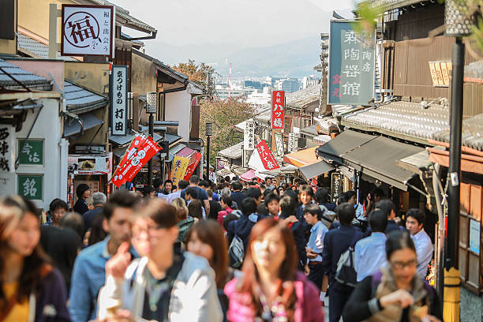
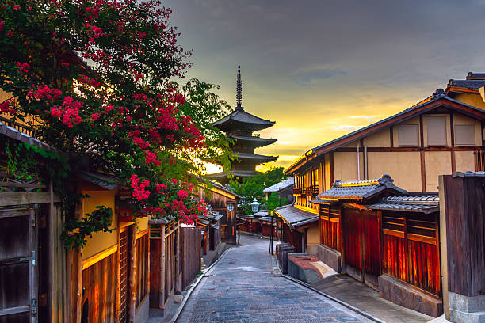
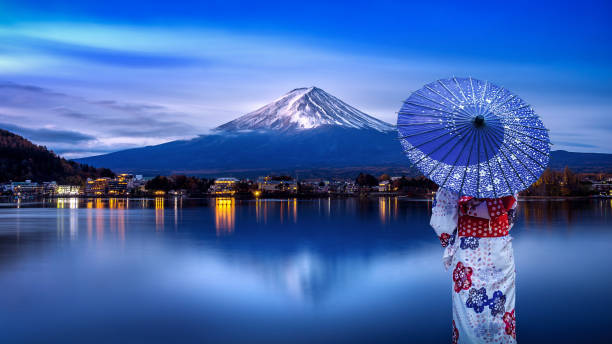

Tourism Areas (観光圏, Kankōken) are areas or zones designated by the Japan Tourism Agency from 2008. As of April 2009, 30 Tourism Areas are located throughout Japan. The Japan Tourism Agency set the law in 2008 regarding this area to support and promote more synergistic activities among local governments, tourism associations, tourism industries and local hotels and other local organizations and individuals. Tourism Areas may promote Visit Japan Campaign hosted by Japanese government through Japan Tourism Agency and Ministry of Land, Infrastructure, Transport and Tourism.Tourism Areas is featured with natural sites, World Heritage Site, old Japanese cultural site, Onsen locations and others as attractive place for tourists. Each area is named in Japanese with mixture of kanji, hiragana and katakana ending with 観光圏. Each area also have their own advertising slogans or catch phrases to represent natural features and hospitality of local people. Most Tourism Areas also promote local people to learn more English, Chinese language, Korean language and other languages for better communication for tourists from countries worldwide.